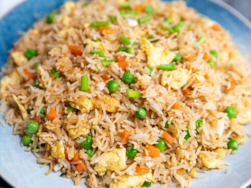

Egg Fried Rice
History
Egg Fried Rice is a staple dish in Asia. Its simple and easy to use ingredients have made it a favorite among many people. It is believed to have been originated in China during the late 6th century. The ingredients used to make the rice were usually leftovers, making it an efficient way to finish anything left from the main meal.
This recipe makes enough egg fried rice to last for a few days. It is perfect for making for a large gathering, or even just for your family.

Ingredients
- Egg – 5
- Cooked basmati rice – 200 grams
- Onion – 1
- Beans – 5
- Carrot – 1
- Capsicum
- Handful of cabbage
- Pepper – 1¼ teaspoon
- Oil – 3 tbl spoon
- Chopped garlic – 1 teaspoon
- Soya sauce – 1 teaspoon
- Spring onion
- Salt
Directions
- Pour 1 tbl spoon of oil in a wok.
- Break 5 eggs in the wok.
- Shake a little salt on the eggs.
- Put 1/4 teaspoon of Pepper on the eggs.
- Scramble the eggs.
- Set the eggs aside once done scrambling.
- Pour 2 tbl spoon of oil in a different wok.
- Put 1 teaspoon of chopped garlic into the wok.
- Put a sliced onion into the wok.
- Saute well.
- Put 5 beans into the wok.
- Put a sliced carrot into the wok.
- Put a capsicum into the wok.
- Put a handful of cabbage into the wok.
- Shake a little salt onto the mixture.
- Saute for 2-3 minutes on high flame.
- Put 200 grams of cooked basmati rice into the wok.
- Put the scrambled eggs into the wok.
- Put a teaspoon of pepper onto the rice.
- Put some pieces of spring onion into the wok.
- Mix well for 2 minutes in high flame, then turn off the flame.
- Enjoy!
Video:
Reference List
https://immigrantlypod.com/blog/staple-rice-dishes-and-the-history-behind-them#:~:text=Since%20egg%20fried%20rice%20is,sometime%20during%20the%20Sui%20dynasty.